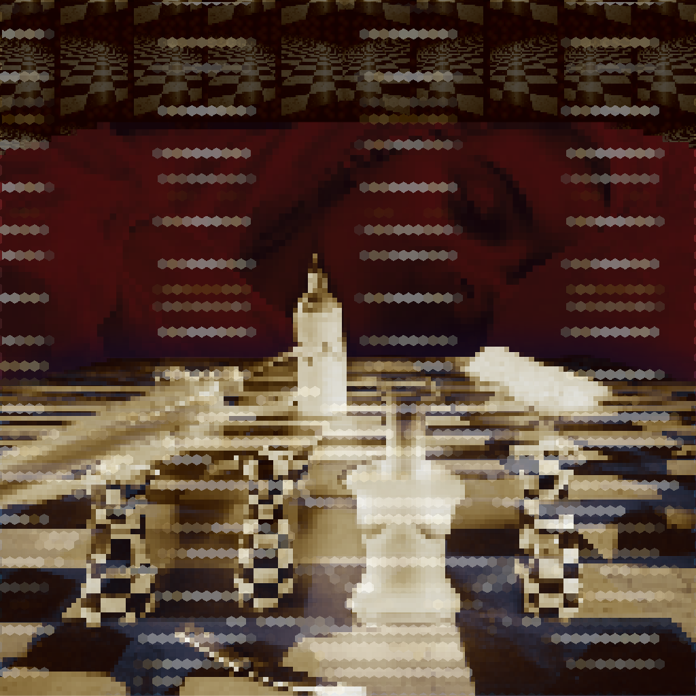

Why does it feel so wrong? The holdlessness. Without touch. Tetherless clay shining dead across; mathematically. Points of the figure float in the white dark like a chosen God itself. The knee is a dot of float a mile from head in longer space, the mountain climb from hip of stretch; only geometry. While the length of man is pulled from itself in ways unknown, the cubes splice like razor nets of the sleeping fish; a spirit painless. A hexahedron of meat with an eye unblinking. The flesh breaking in slices, not with violence, but more like a paper cut through reality. The forms slide from one another, the white void apart at the seams, showing black in between.
Escalating up coaster coldness into anatomical exostentializing beg pouring the self, their stir-ups kicking the forbidden god-tip of tongue splits. Cupless with self. He has nerve sirens sounding over thrashing waves before the lighthouse returns. Psyche holds the erodes in the screaming clay wrought with photential nous spills.
The dark slits of white growing into a room, revealing a world. Knees returning from white like blueprints filled with wet concrete; blood rushes felt. White fuzz screens tearing more, into dark pastel spots throughout the walls and singular. The window speaks by image of warm street light post-waltz flickers in front of tree-tall wilders. The second story as high as the fourth. An emptiness of someone’s death returning, years pouring through neuraldraulics; the spine signals passage permits.
“This is what I have…” He sees himself whispering into long hair strand hangs.
God vomits abstracts in the head.
A pair of heart bumbles in ear. Sad air out the window blows, the empty left of death following, night after night. Warmth flushing in at extremities and face increasing, with a body returned.
Nightly dirt warmth’s scents with trees carried into winds, humid magnified.
“I can’t live.” The solemn voice barely tries to make itself known in the mind.
Still, winds flush with hurt sweep in through the screen of an open window. Where are the miracles? Where is the good ending? Just loss is all. The art and wonder are either pain or a soul-heart vacancy, with cubed paintings of lifeless marionettes on the wall next to deformations of angels pasteled in red, white, and black.
Clicking in the night heard, lifeless clicks familiar. He gets lost in himself again, looking at his art on the wall. He is sleeping through his time alive. The rain begins outside softly. He doesn’t even look outside. The ethereal of melancholy is loudly quiet by himself. The cold is so warm to him right now.
The clicks deathly constant. He turns over his head towards the sound from the window. Eyes. Smiles. Light porcelain shines. Staring.
He is blue with cold sweat. Disturbed. Why—can’t—he—move? Move. The doll puppet is still clicking. Lifeless clicks. Worse than a demon, a nothing more.
The eyes unblinking, big eyes like plastic, large with round. Smile cranked still. The uncanny resemblance found somewhere in the soul.
Alice’s name comes to mind.
The weirdness, gone with a blink. The rain, smells, lights, the night; unchanging. The calm left after is more startling. What kind of play is this?
White noise is colored by the sight of the warm night of a flickering street light—lighthouse. His head is stiff in the fear of the dark in his room. He tries to twist the head against the power over him; it is slow. Left… Left, a little more. Leftward—until—the doll—it is in a painting he made. Did he hallucinate the painting he made? Was it just the drug leaving his system?
A little calmer now, the sweat and chill on his spine a little more noticeable. Still afraid.
From the deeper dark side of the room, an ear raises from the cold and dry breath of tenor-squeal of tape.
Row, row, row your boat. Gently down the stream. Merrily, merrily, merrily, merrily, life is but a dream.
Stiff. Every word tickling the hair. He can’t move.
His eyes don’t roll; they dart fractions of a fraction, like stutters in his eyelids peeled. One—two—a little more—the doll. The doll is right there. Less than an inch of left, in the dark of one eye left. Fixed smile broken across its face. Insanity is possessing him; the insanity inside is screaming the terror thought, “Fake—fake!”
The pupil reflects like nothing ever was, taunting even Curse himself somehow, but how?
His face is now frozen as the puppet’s, the left eye stuck in a freeze of panic. Haunted with an abyssful wrong stalk. The heart skips a long beat. It has somehow been so short a time in this shock. Blink.
After a blink, gone. Where? He jumps up and off his bed next to the window, running on stumbling feet, fast, the light he thinks. He almost falls over himself, as he is running with the possession of God at the light, trying to find the light switch, and he does. He flicks the light switch on the wall. It is bright in his room now. He can see.
He is breathing shallow, but there is some relief. The breath is caught a little from it all. It felt like a fear greater than God. He is trying to calm himself. Shaking at the fingers, he finds the air even more dry. He looks over at the bed. The fucking puppet is smiling, sitting up straight on his bed he ran from, its head staring at him under the light of the ceiling fan. Everything is still.
“Why don’t we talk about Alice?” the smiling toy says to him.
He can’t believe it; the doll just fucking spoke. That high pitch doesn’t even sound real to him. He feels rigid.
“Your love, she is free now,” the puppet tells him.
“Who—are you?” the man asks of the thing.
The doll stares blankly without voice. A few seconds of those unblinking eyes and their glare, soulless with a soul movement. The doll moves its right arm by the slightest of raise. It takes a whole second for its arm straight to raise the hand an inch, and it is still moving. The man is seeing it slowly raise; it creates a stiff in his neck. He is darting his eyes up and down it while its eyes stare into his, even while its arm is raising. Seconds, and a few more, its hand pointing by the index, until it finds its place; its finger points at a painting of itself he created, its hand unmoving now. He sees it.
He asks again… His voice stumbling in a quiet almost unheard: “Who are you?”
The light cuts out; the window slams shut with a loud beating that startles him to a jump. No light is let in through. The wind is cut off.
The air is sucked out. The pale chews him. The skin crawls across the narrow hallway not here like prey. The dark everywhere. No more sounds. He can’t find the sound of rain anymore… His head is spinning; lost now. He hears a low of low flashing in his heart, mind, and soul, like a roaring pitch black of an ocean depth drowning out the room in darkness: “I am the null…”